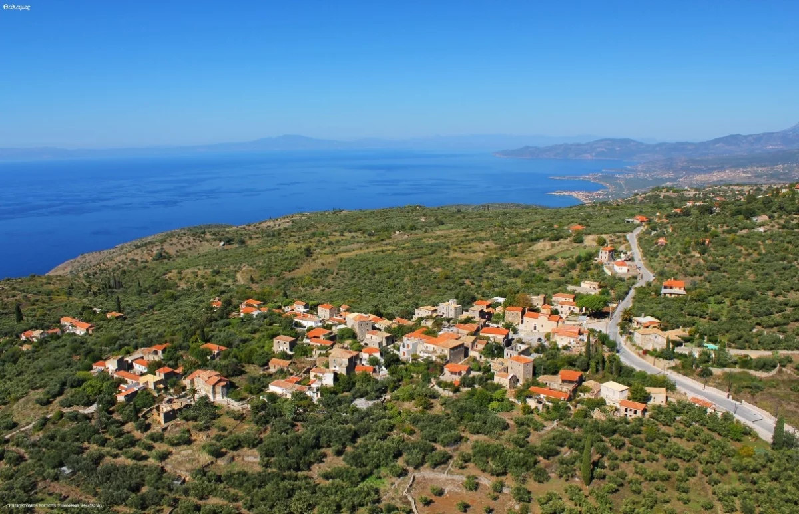

Thalames

3 Fun Facts About Thalames
- An ancient connection: Thalames is identified with ancient Thalamai, a settlement with roots in the history of Laconia.
- A dream-powered oracle: People visited the sanctuary of Ino-Pasiphae to seek answers through dreams. Even officials from Sparta made pilgrimages there.
- Medieval history still survives: Two churches dating to the 13th century show that the area remained inhabited during Byzantine times.